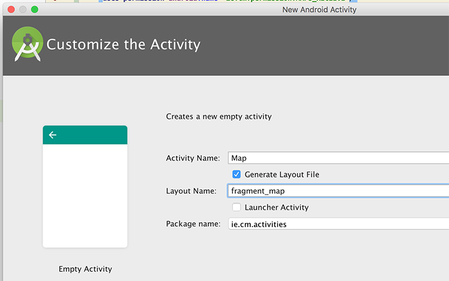
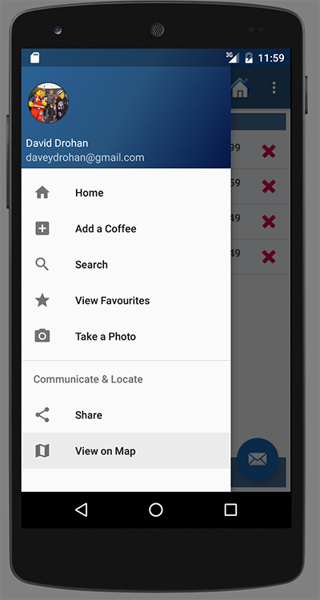
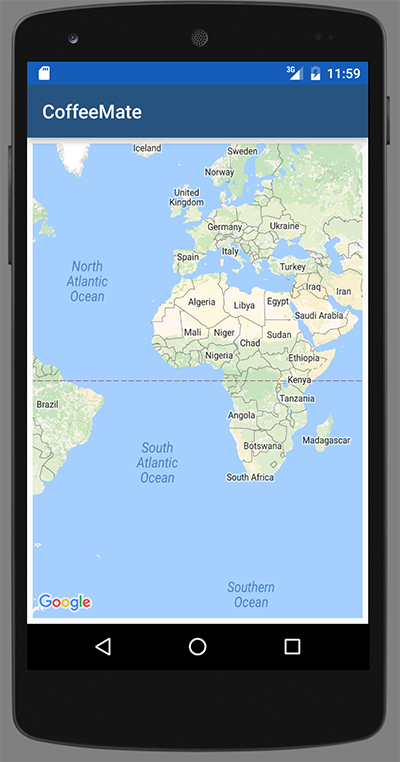
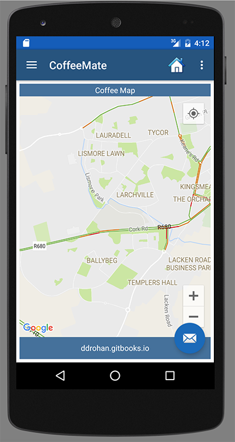

Objectives
This lab 'takes a big step forward', in that we refactor the previous version (6.0) of our Case Study CoffeeMate and introduce Firebase Support via Google Authentication and a Realtime Database in version CoffeeMateFBI.1.0
Setup - Starter Code
It can be quite difficult to try and 'bolt on' Firebase to an Android App, depending on the number and type of APis being used, but we can start with a version which does include a number of the Google APis that we need, namely CoffeeMate.6.0, which you can download here - CoffeeMate.6.0.
As always, It's probably still a good idea to run the App and confirm that the app (or your 6.0 version app) is configured properly and (still) running.
You might also want to rename the app to what I will be referring to throughout the rest of the lab - CoffeeMateFBI.1.0.
On completion of this lab, you will be able to do the following:
Create/Import a new project to your Firebase Console (found here) and configure your project as required
Add Firebase Authentication (including Google Sign-In)
Add CRUD (Create Retrieve Update Delete) functionality via your Firebase Realtime Database
The following steps will help you achieve this, so before we can do anything with Firebase, let's setup our CoffeeMate Project on the Firebase Console.
The instructions on the official developer docs are as good a place to start as any, so check how to 'Add Firebase to your Project' here.
The final list of dependencies/plugins required are as below, so confirm your list against mine and add them in at this stage if you so wish?
dependencies {
compile fileTree(include: ['*.jar'], dir: 'libs')
compile project(':volley')
compile 'com.android.support:appcompat-v7:25.2.0'
compile 'com.android.support:support-v4:25.2.0'
compile 'com.android.support:design:25.2.0'
compile 'com.makeramen:roundedimageview:2.2.1'
compile 'com.android.support.constraint:constraint-layout:1.0.2'
compile 'com.google.code.gson:gson:2.7'
compile 'com.google.android.gms:play-services-auth:11.0.2'
compile 'com.google.android.gms:play-services-maps:11.0.2'
compile 'com.google.android.gms:play-services-location:11.0.2'
compile 'com.google.firebase:firebase-core:11.0.2'
compile 'com.google.firebase:firebase-auth:11.0.2'
compile 'com.google.firebase:firebase-database:11.0.2'
compile 'com.firebaseui:firebase-ui-database:1.0.0'
testCompile 'junit:junit:4.12'
}
apply plugin: 'com.google.gms.google-services'Once you have your project set up, you can continue on to the next step.
Signing In with Firebase Authentication
First of all,
https://console.cloud.google.com/home/dashboard
compile 'com.google.android.gms:play-services-maps:8.1.0'
compile 'com.google.android.gms:play-services-location:8.1.0'Then, go ahead and create a new Empty Activity but name the Layout fragment_map - this is important as we will be disgarding the activity in the next step but retaining the layout - we are just using it here to confirm we have configured our key etc. correctly.

now add the following to the layout
<fragment android:name="com.google.android.gms.maps.MapFragment"
android:id="@+id/map"
android:layout_width="match_parent"
android:layout_height="match_parent"/>Finally, (for this step) add the following to your Home Activity, to temporarily handle launching our new Map activity, if the user selects the menu option.
else if (id == R.id.nav_map) {
startActivity(new Intent(this, Map.class));
}Run your app and select "View on Map"

and if everything goes according to plan, you should get

Congratulations - you can now go ahead and build map based apps!
You can download a version of this stage of CoffeeMate.6.0 on the next step, if you're still having issues.
View Users Current Location - Part I
Before you go any further, here's where we're at so far
At the moment, when the user selects the 'Map' menu option, they get to see a standard map, but not their own location (or even their coffees locations), so this step (and the next) is about implementing that (we'll look at the coffees location in later steps).
As we want to keep in line with the UI guidelines and approach, it makes sense to use a Fragment so first of all go ahead and create a new (Blank) Fragment called MapsFragment (NOT MapFragment) but DON'T create a layout or include interface callbacks

Make sure it extends from MapFragment and implements the following interfaces, like so
public class MapsFragment extends MapFragment implements
GoogleApiClient.ConnectionCallbacks,
GoogleApiClient.OnConnectionFailedListener,
GoogleMap.OnInfoWindowClickListener,
GoogleMap.OnMapLongClickListener,
GoogleMap.OnMapClickListener,
GoogleMap.OnMarkerClickListener,
LocationListener {
...
}Fix the errors and replace the existing newInstance() method with this one
public static MapsFragment newInstance() {
MapsFragment fragment = new MapsFragment();
return fragment;
}Replace the existing instance variables with these
private GoogleApiClient mGoogleApiClient;
private Location mCurrentLocation;
private LocationRequest mLocationRequest;
private List<Coffee> mCoffeeList;
private long UPDATE_INTERVAL = 30000; /* 30 secs */
private long FASTEST_INTERVAL = 1000; /* 5 secs */
/** Define a request code to send to Google Play services This code is
* returned in Activity.onActivityResult
*/
private final static int CONNECTION_FAILURE_RESOLUTION_REQUEST = 9000;
private final int[] MAP_TYPES = {
GoogleMap.MAP_TYPE_SATELLITE,
GoogleMap.MAP_TYPE_NORMAL,
GoogleMap.MAP_TYPE_HYBRID,
GoogleMap.MAP_TYPE_TERRAIN,
GoogleMap.MAP_TYPE_NONE
};
private int curMapTypeIndex = 1;Remove onCreate() and onCreateView() and replace with
@Override
public void onViewCreated(View view, Bundle savedInstanceState) {
super.onViewCreated(view, savedInstanceState);
setHasOptionsMenu(true);
TextView titleBar = (TextView) getActivity().findViewById(R.id.recentAddedBarTextView);
titleBar.setText("Coffee Map");
mGoogleApiClient = new GoogleApiClient.Builder( getActivity() )
.addConnectionCallbacks( this )
.addOnConnectionFailedListener( this )
.addApi( LocationServices.API )
.build();
initListeners();
}Add the following methods
private void initListeners() {
getMap().setOnMarkerClickListener(this);
getMap().setOnMapLongClickListener(this);
getMap().setOnInfoWindowClickListener(this);
getMap().setOnMapClickListener(this);
}
@Override
public void onStart() {
super.onStart();
mGoogleApiClient.connect();
}
@Override
public void onStop() {
super.onStop();
if( mGoogleApiClient != null && mGoogleApiClient.isConnected() ) {
mGoogleApiClient.disconnect();
}
}
private void initCamera( Location location ) {
CameraPosition position = CameraPosition.builder()
.target( new LatLng( location.getLatitude(), location.getLongitude() ) )
.zoom( 14f )
.bearing( 0.0f )
.tilt( 0.0f )
.build();
getMap().setMapType(MAP_TYPES[curMapTypeIndex]);
getMap().setMyLocationEnabled(true);
getMap().getUiSettings().setMapToolbarEnabled(true);
getMap().getUiSettings().setCompassEnabled(true);
getMap().getUiSettings().setMyLocationButtonEnabled(true);
getMap().getUiSettings().setAllGesturesEnabled(true);
getMap().setTrafficEnabled(true);
getMap().setBuildingsEnabled(true);
getMap().getUiSettings().setZoomControlsEnabled(true);
getMap().animateCamera(CameraUpdateFactory.newCameraPosition(position), null);
}And replace the relevant methods with the following
@Override
public void onConnected(Bundle dataBundle)
{
// Display the connection status
try {
mCurrentLocation = LocationServices .FusedLocationApi .getLastLocation(mGoogleApiClient);
}
catch(SecurityException se) {
Toast.makeText(getActivity(),"Check Your Permissions",Toast.LENGTH_SHORT).show();
}
if (mCurrentLocation != null) {
Toast.makeText(getActivity(), "GPS location was found!", Toast.LENGTH_SHORT).show();
//LatLng latLng = new LatLng(mCurrentLocation.getLatitude(), mCurrentLocation.getLongitude());
}
else {
Toast.makeText(getActivity(), "Current location was null, Setting Default Values!", Toast.LENGTH_SHORT).show();
mCurrentLocation = new Location("Waterford City Default");
mCurrentLocation.setLatitude(52.2462);
mCurrentLocation.setLongitude(-7.1402);
}
initCamera(mCurrentLocation);
}
@Override
public void onConnectionSuspended(int i) {
if (i == CAUSE_SERVICE_DISCONNECTED) {
Toast.makeText(getActivity(), "Disconnected. Please re-connect.", Toast.LENGTH_SHORT).show();
}
else if (i == CAUSE_NETWORK_LOST) {
Toast.makeText(getActivity(), "Network lost. Please re-connect.", Toast.LENGTH_SHORT).show();
}
}
@Override
public void onConnectionFailed(ConnectionResult connectionResult) {
/* * Google Play services can resolve some errors it detects. If the error * has a resolution, try sending an Intent to start a Google Play * services activity that can resolve error. */
if (connectionResult.hasResolution()) {
try {
// Start an Activity that tries to resolve the error connectionResult.startResolutionForResult(getActivity(), CONNECTION_FAILURE_RESOLUTION_REQUEST);
/* * Thrown if Google Play services canceled the original * PendingIntent */
}
catch (IntentSender.SendIntentException e) {
// Log the error e.printStackTrace();
}
} else {
Toast.makeText(getActivity(), "Sorry. Location services not available to you", Toast.LENGTH_LONG).show();
}
}Now, open your Home Activity and instead of loading the Map Activity (as is currently the case) implement the necessary code to display our MapsFragment.
If you've followed all the steps correctly, you should be seeing something like this

Experiment with different coordinates and restarting your app. Now obviously, having to manually change the coordinates is not an option, so the next step will be about adding Location Awareness to our App and updating the Map automatically, as the user moves around and adding a 'Marker' to show these movements.
View Users Current Location - Part II
The previous step was mostly about adding in a lot of boilerplate code to our Fragment, to get things moving - a lot of which you would have seen in the lecture material that covers Location and Google Maps.
This step adds a bit more of that, but also adds some bespoke code specific to CoffeeMate and its features.
Firstly, edit your MapsFragment and add/replace the following methods
protected void startLocationUpdates() {
mLocationRequest = new LocationRequest();
mLocationRequest.setPriority(LocationRequest.PRIORITY_BALANCED_POWER_ACCURACY);
mLocationRequest.setInterval(UPDATE_INTERVAL);
mLocationRequest.setFastestInterval(FASTEST_INTERVAL);
try {
LocationServices.FusedLocationApi.requestLocationUpdates(mGoogleApiClient, mLocationRequest, this);
}
catch(SecurityException se) {
Toast.makeText(getActivity(),"Check Your Permissions on Location Updates",Toast.LENGTH_SHORT).show();
}
}
public void onLocationChanged(Location location) {
// Report to the UI that the location was updated
String msg = "Updated Location: " + Double.toString(location.getLatitude()) + "," + Double.toString(location.getLongitude());
Log.v("coffeemate", "onLocationChanged() = " + msg);
mCurrentLocation = location; initCamera(mCurrentLocation);
}And make sure you call startLocationUpdates() in your onConnected()
Now, add the following permission to your manifest file
<uses-permission android:name="android.permission.ACCESS_FINE_LOCATION"/>and run your app again (and remember to accept these new permissions).

You should now see something like this when you 'View on Map'

but now when you send new coordinates to the emulator, you should see the 'blue dot' move to that new location, as below


View Users Coffee Locations
The last step in this lab involves displaying the users coffees on the map, along with the users location (which was the last step) so we need to modify a few classes here, namely
- MapFragment
- AddFragment
- CoffeeApi
MapFragment
Here we need to inspect our list of coffees and (using the longitude and latitude coordinates) place a marker on the map indicating the location of each coffee.
So, first, open up your MapFragment class and add the following method
public void addCoffees(List<Coffee> list){
for(Coffee c : list)
getMap().addMarker(new MarkerOptions()
.position(new LatLng(c.marker.coords.latitude, c.marker.coords.longitude))
.title(c.name + " €" + c.price)
.snippet(c.shop + " " + c.address)
.icon(BitmapDescriptorFactory.fromResource(R.drawable.coffee)));
}To ensure our list of coffees is up to date and the most recent one, the MapFragment class needs to implement the VolleyListener interface, so go ahead and complete that now.
Once you've implemented the necessary methods, add a call to addCoffees() in your setList() method.
Now, add the following APi call to your onConnected()
CoffeeApi.attachListener(this);
CoffeeApi.getAll("/coffees/" + Base.googleToken, null);Because we're passing 'null' to our getAll() call, there's a small change you need to make in your CoffeeApi class - so see if you can work out what it is?
Once you have, add this to your onStop()
CoffeeApi.detachListener();Before you run your app, I'd suggest checking the Web App to confirm you have some coffees stored on the server and can view them on the Map in the Browser, so when you run your app, you know it's working correctly if you see your coffees - something like this

AddFragment
Now that we can see existing coffees on our Map, what about when we add new coffees on the device, not the web app? This is the final step in our Case Study and involves a bit of work in refactoring our AddFragment as we need to grab the current location to save with our coffee details.
And for fun :) we'll also embed our MapFragment inside the AddFragment layout, so we can see where we're adding our coffee, like so

First thing to do is
. . .
. . . .
. . . .